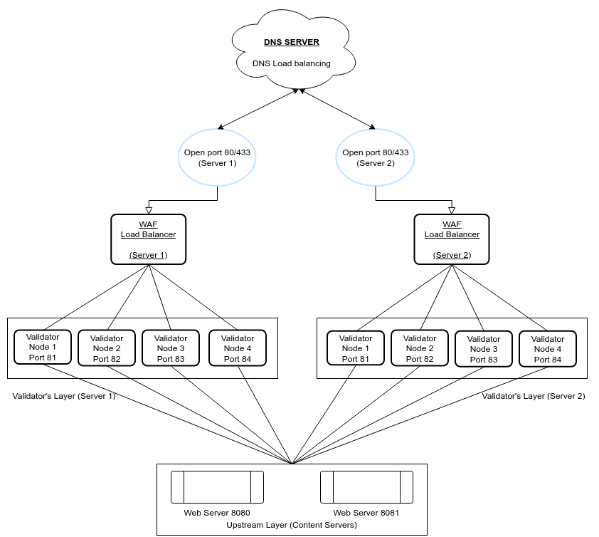

Overview
This project implements a robust Anti-DDoS system architecture using DNS load balancing, Web Application Firewalls (WAF),
and validator nodes to secure web servers against distributed denial-of-service attacks.
The system is designed to distribute incoming traffic efficiently and validate requests to ensure that
only legitimate traffic reaches the upstream content servers.
Architecture
- DNS Server
- Function: Handles DNS load balancing to distribute incoming traffic between two main servers (Server 1 and Server 2).
- Ports Open: 80/443 (HTTP/HTTPS)
- WAF Load Balancer
- Servers: Two WAF load balancers (one for each main server) manage the flow of incoming traffic to validator nodes.
- Role: Protects against malicious traffic by filtering and blocking potentially harmful requests before they reach validator nodes.
- Validator Layer
- Nodes: Each server contains four validator nodes with different ports (81, 82, 83, 84).
- Purpose: Each validator node checks the validity of incoming requests to prevent automated attacks, ensuring only genuine requests are forwarded.
The validator nodes utilize TensorFlow Lite models to identify and classify potential DDoS attacks by analyzing traffic patterns and anomalies.
- Upstream Layer (Content Servers)
- Web Servers: Two main web servers (ports 8080 and 8081) host the content.
- Function: Serve validated requests from the validators, providing the final content to users.
Setup Instructions
- DNS Configuration: Set up DNS load balancing to distribute traffic between Server 1 and Server 2 on ports 80/443.
- WAF Load Balancer Setup: Deploy WAF load balancers on both Server 1 and Server 2 to filter traffic before it reaches the validator nodes.
- Validator Nodes Deployment: Configure validator nodes on each server (Server 1: ports 81-84, Server 2: ports 81-84) to handle traffic validation.
- Content Servers Configuration: Set up the web servers on ports 8080 and 8081 to serve the validated requests from the validators.
Features
- Load Balancing: Efficiently distributes traffic across multiple servers to optimize performance and availability.
- Security Layers: Multi-layered security approach with WAF and validator nodes to protect against DDoS attacks.
- Scalable: Easily add more validator nodes or servers to scale the system as needed.
Team
| Name |
Email |
| Anurag Sen |
develop.contactus@gmail.com |
| Sourav Sharma |
sourav.dev.thunder@gmail.com |
| Subhayan Mandal |
toxic.369.hkr@gmail.com |
| Debjeet Ghosh |
debjeet1ghosh21@gmail.com |
| Rajankita Saha |
rajankita0735@gmail.com |
| Mitali Rath |
mitalirath939@gmail.com |